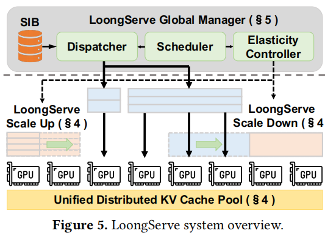
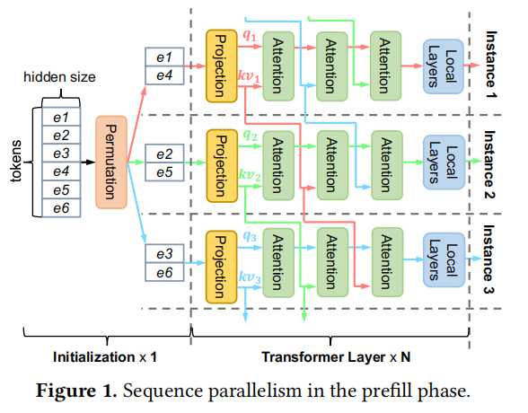
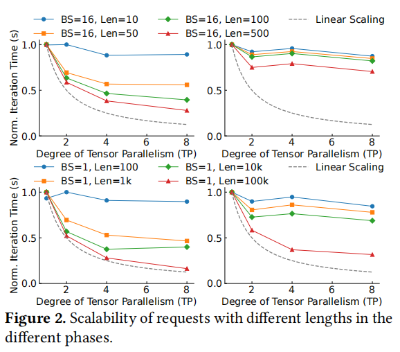
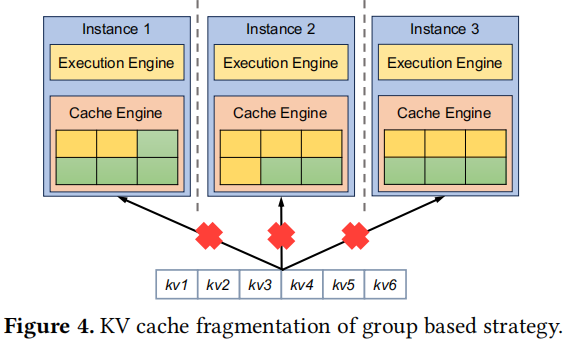
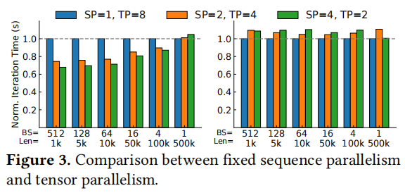

LoongServe: Efficiently Serving Long-Context Large Language Models with Elastic Sequence Parallelism
Bingyang Wu, Shengyu Liu, Yinmin Zhong, Peng Sun, Xuanzhe Liu, Xin Jin
PKU Xin Jin导师和Shanghai AI Lab Peng Sun导师的论文
一句话总结概括
针对静态的并行策略无法解决不同文本长度的请求分配问题
该洞见引申到其他领域中的可能
创新点或贡献
- computation efficiency
- 实时弹性地调整parallelism(ESP)
- communication efficiency
- reduce KV cache migration overhead
- overlap communication with computation
- GPU memory efficiency
- reduce kv cache fragmentation across instances
具体设计

- ESP：在Scale-up和Scale-down的场景中没有额外通信开销
- Prefill phase
- proactive scaling-down mechanism
- scale down重用prefill 阶段的通信开销
- proactive scaling-down mechanism
- Decoding Phase
- multi-master decoding mechanism
- 避免了existing kv caches的migration
- overlap the communication with computation
- multi-master decoding mechanism
- Prefill phase
- Manage tokens at the granularity of a single token across instances without any locality
- 消除了内存碎片？
- Scalable four-step scheduling algorithm
- DoP setting, batching, key-value cache placement, elastic scaling
ESP的例子

- 选择scale down
- 在prefill完长文本后，decode需要的资源不再那么多【B1，I1】【B2，I1】
- 需要分配一些资源给新的prefill【B2，I3】
- 选择scale up
- decode阶段生成的tokens超过了KV cache的空间【B1，I3】【B2，I2】
- batch size很大的时候，会变成compute bound
Scale down的时候会面临一个挑战：旧的并行组的KV tensors如何有效地传输到新的并行组
以往的解决方案：在prefill后将KV tensors传到对应的并行组。但这种方案有两个问题。（1）在句子长度很长的时候，需要长达几秒钟的传输时间需要几秒钟，甚至比decoding阶段还要长。（2）在多个instances节点都有足够空间的情况下才可以使用，比如需要600空间的请求进入100，200，400三个节点中，因为第一个节点没有600/3=200的空间，所以无法服务。那么，我们需要使用不规则的GPU空间来存放KV tensors？
总的来说，有两个难题：1. 如何减少通信。2.如何实现不规则
文章提出了一个insight：在使用PP的prefill阶段中，并行组会循环KV tensors的信息。我们就可以利用这个特性选择性保存我们需要的KV tensors，从而实现零额外开销的弹性缩小。

Scale up的时候会面临一个主要挑战：确保新添加的实例能够有效参与，并且不会增加额外的开销
以往的解决方案：很多工作只支持在单个instance中分布式推理。但当其内存不足时，会将一部分批处理请求迁移到另外一个实例中，这部分开销很大。并且这种方法要求所有或大部分KV tensors都得存在一个instance中，可能会导致内存碎片问题。
总的来说，有两个难题：1.Cache整体迁移耗时长。 2.KV cache的碎片化问题导致无法服务。
所以文章提出了一种方法，将sequence parallelism推广到decode阶段。每个Req有其主要负责的master，而KV cache可以存在在不同节点中。比如Instance 1负责r1和r2两条req。其部分KV Cache存放在Instance2中。所以每次计算其在本地算完req的kv和q后，kv存放用于本地kv cache，并进行这部分kv的attention计算。将一部分q分到instance2中，然后instance2算完再发回来，然后在master instance完成剩下的线性层。
感觉这里假如不均匀放的话，会涉及GPU忙等问题，比如r1可能只在一个节点，r2却在两个节点中。

调度
Dispatching
考虑GPU内存和GPU计算压力的情况下，将一部分请求从pending queue分发到prefill queue，这部分请求就是$R_p$。
关于GPU memory的限制，假如该请求可能触发驱逐（用户给出的最大生成长度），那么这个请求将无法进入。
关于GPU computing的限制。这个有一个观测，LLM inference会在某个边界后从memory bound转化为computing bound。在memory bound的时候，增加更多的请求可以提高GPU计算的效率。在computing bound的时候，增加更多的请求基本只是延长执行的时间。所以本工作就在超过这一界限的时候，停止请求的分发。并且这里还得评估最坏情况中抢占之前请求的成本和该请求prefill获取的性能收益。
这里的公式没看懂
Elastic Instance Allocation
具体分发prefill的请求，意思是将选出来的$R_p$分发给哪些弹性节点$E_p$。
这里会涉及最大化性能的考虑。这里可能会涉及prefill对decode的抢占。
先将空闲的instance分发给Rp，如果空闲的kv cache空间不够，优先使用kv cache剩余空间更多的节点。
且为了避免抢占，需要尽可能将抢占实例中的kv cache迁移到别的实例中。
公式也没看懂。
Batching
根据$R_p$和$E_p$决定DoP。
Elastic Scaling Plan Generation
动态地生成ESP组的scale up和scale down。
实验评估
实验评估真硬啊。。。
背景
先前工作存在的问题概述
- 设置是静态的，但workloads是动态的
- existing practices decide the parallel configuration statically before launching the service
- The variance of input lengths of requests becomes larger
- 静态并行也没有考虑请求不同阶段(prefill decode)的差异
难点
fully unleashing the potential of ESP
A large overhead of elastic scaling can negate the benefit of flexible resource allocation
The complicated scheduling space:
- dynamic loads of requests
- variable sequence lengths
- different phases
补充背景
Sequence Parallelism and Striped Attention
\
- tokens被分成几段到不同的instances中
- 计算自己的q和当前要处理的kv（一开始是自己）
- 传kv到下一个相邻的instance
- 回到第二步，直到做完所有attention计算
好处：
- 序列并行兼容流行的注意力机制
- 和张量并行有相同的计算复杂度，但消耗更少的GPU内存
- 可以和张量并行一起使用
缺点：
- 只支持prefill阶段
- 需要在并行度固定的训练场景中才能使用
Computation and GPU memory consumption across requests with different input lengths

图的含义（应该是）
左边是prefill，右边是decode
上面是短文本，下面是长文本
横坐标是TP规模，纵坐标是范数
观察：
- 长文本需要的内存相比短文本是线性增长的
- prefill在并行的收益更大，但decode在并行时收益并不大
Dynamically altering the parallelism strategy
- 需要重新启动，开销很大，比如需要几分钟，不可接受
- 内存碎片问题

局部性需要kvcache尽量在同一个节点，所以来了六个KV cache，但没有cache engine可以存放了
弹性序列并行

不同文本情况下，并行策略带来的收益也不一样
思考角度
我如何做这个问题
这个洞见可以引申出其他其他方法吗
异构集群下处理弹性调度问题是否会有什么难题
该洞见是否可以迁移到其他领域中
该工作有什么可能可以改进的地方
- 是否只针对同构系统
- 这个和prefill decode静态的分离区别在哪
Q&A
scale down的缓冲区是什么？在4.1末尾